PROYECTOSdesarrollados desde 2022
00 / NUDO
Estudio de arquitectura fundado en 2022.
Diseñamos, documentamos y dirigimos cada proyecto como un proceso único.
Participamos directamente desde los primeros trazos hasta la ejecución, integrando decisiones arquitectónicas, técnicas y constructivas.
CONOCER EL ESTUDIO ↘︎PROYECTADOSen proyectos de distintas escalas
AÑOScreando
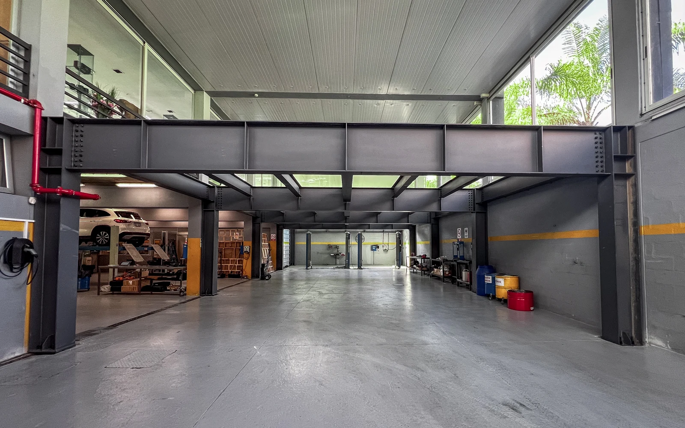
01
AlfaliderComercial
Punta del Este, Maldonado.

02
AraruamaResidencial
Punta Carretas, Montevideo
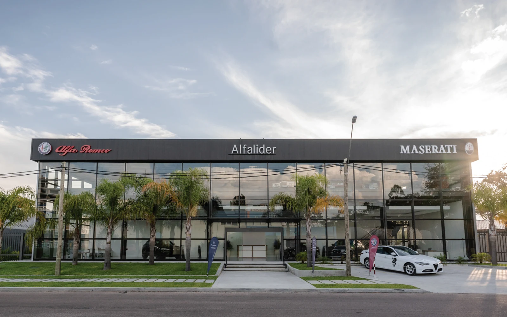
03
Classic CarsComercial
Punta del Este, Maldonado
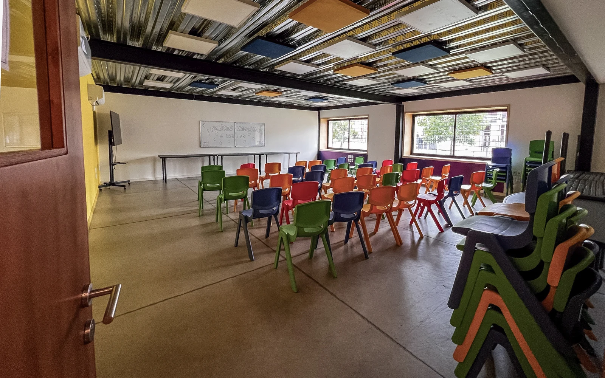
04
Colegio MaturanaEducativo
Montevideo
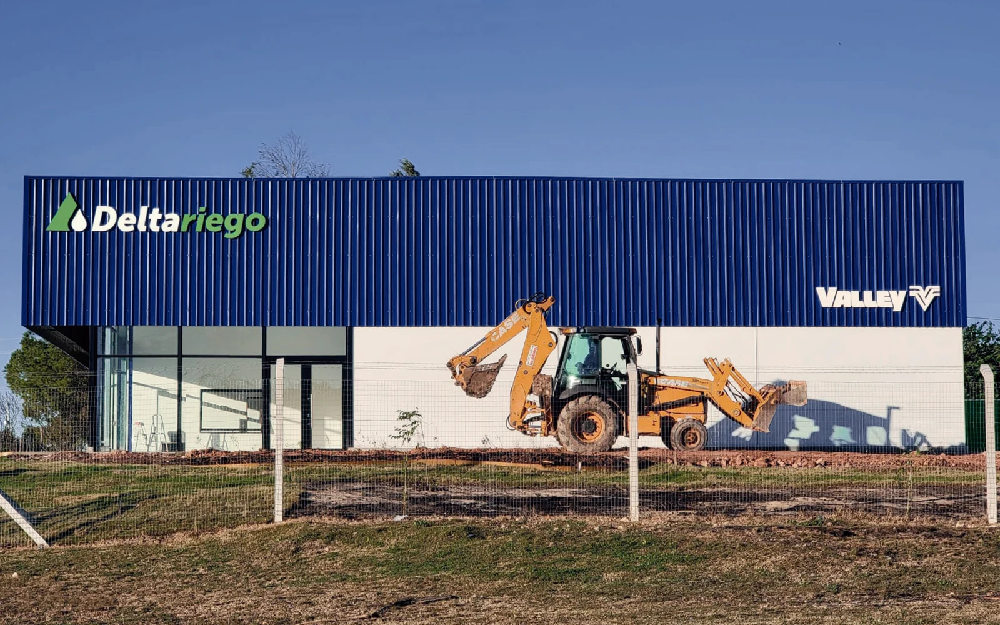
05
Delta RiegoIndustrial / Comercial
Mercedes, Soriano
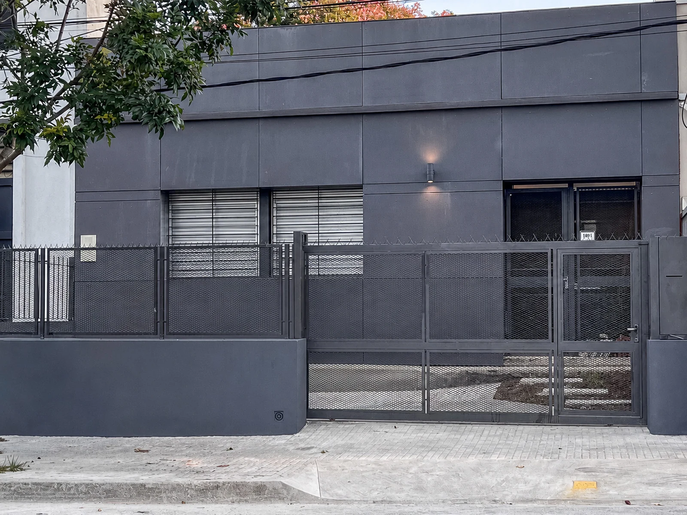
06
Ingreso BerroResidencial
Prado, Montevideo

07
MatisseSocial / Gastronómico
Parque Miramar, Canelones
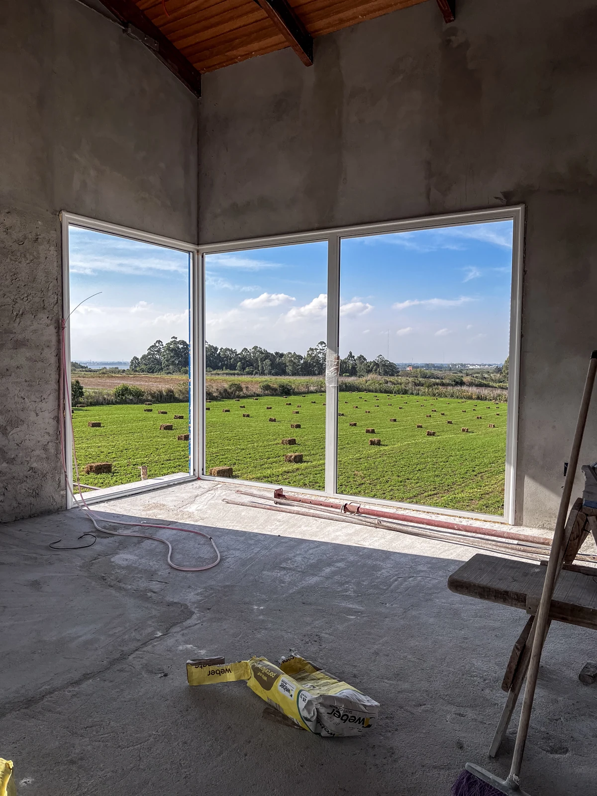
08
Punta EspinilloResidencial
Punta espinillo, Montevideo.
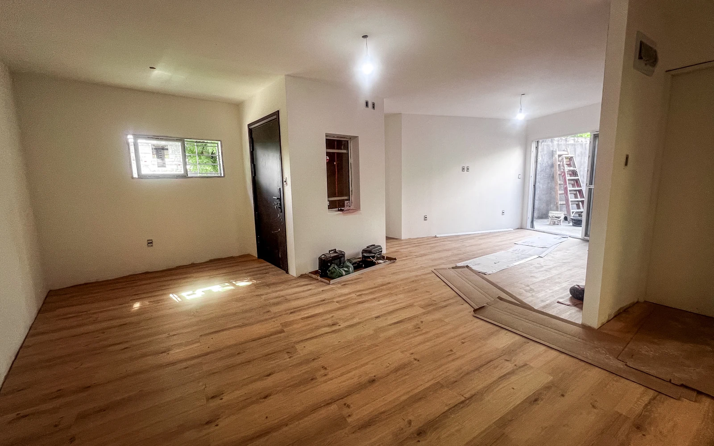
09
Reforma NelsonResidencial
Prado, Montevideo
FORMA DE TRABAJO
La obra no es una etapa posterior al proyecto. Es parte del proyecto desde el primer día.
02 / ESTUDIO
Una mirada contemporánea con soluciones concretas.
Trabajamos en todo el país, nuestra base operativa se encuentra en Montevideo y Maldonado.NUDO es un estudio joven creado en 2022, cuando sus fundadores decidieron sumar su experiencia.
Nos enfocamos en proyectos de pequeña y mediana escala, abarcando anteproyecto, diseño arquitectónico, proyecto ejecutivo, dirección y gestión de obra.
Estamos en constante búsqueda de proyectos innovadores y que nos desafíen a nivel profesional.
Proyecto arquitectónico
Anteproyecto, diseño, documentación ejecutiva, coordinación técnica y modelado.
Dirección y gestión de obra
Planificación, seguimiento, coordinación de proveedores, control de ejecución y resolución técnica.
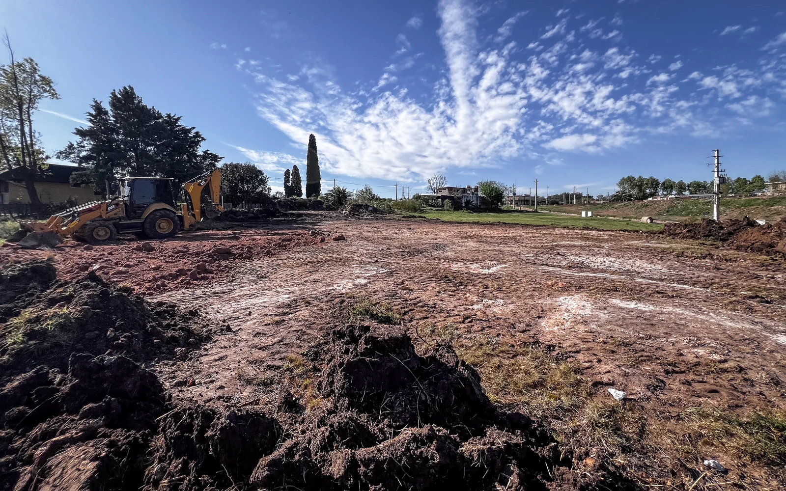
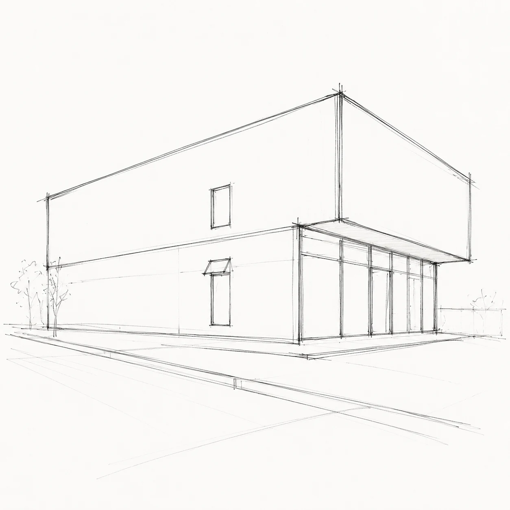
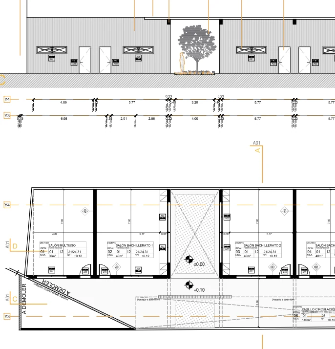

PROCESO
EQUIPO
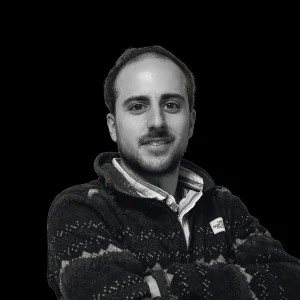
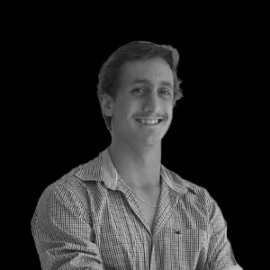
03 / CONTACTO